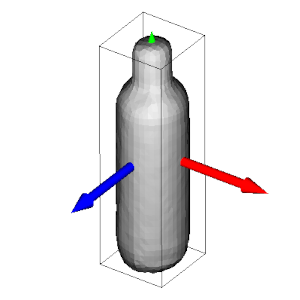
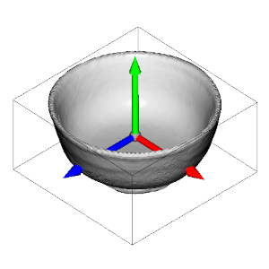
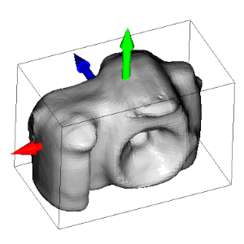
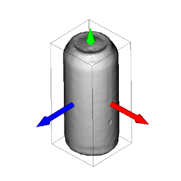
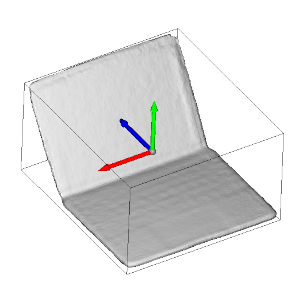
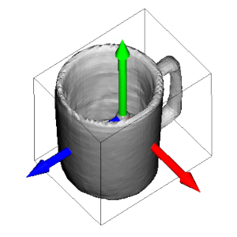

Tutorial: Evaluate new method¶
In this tutorial we will walk through how to use the toolbox to evaluate a new method for pose and shape estimation. We assume the toolbox has already been installed successfully and the standard commands work.
To evaluate a new method, we need to implement the interface between the method and the toolbox by defining a class inheriting from CPASMethod. The derived class needs to define at least the inference function, which is called by the evaluation script. The __init__ typically also has to be defined as it provides the dataset's camera parameters which are typically required for inference.
Typically three steps have to implemented:
- Converting the input to the expected input format
- Call the inference code of the new method
- Convert the output of the method to the expected output format for the toolbox
from cpas_toolbox.cpas_method import CPASMethod, PredictionDict
import torch
class MyCPASMethod(CPASMethod):
def __init__(self, config: dict, camera: camera_utils.Camera) -> None:
"""Initialize categorical pose and shape estimation method.
Args:
config: Method configuration dictionary.
camera: Camera used for the input image.
"""
# save / convert camera as needed by inference
pass
def inference(
self,
color_image: torch.Tensor,
depth_image: torch.Tensor,
instance_mask: torch.Tensor,
category_str: str,
) -> PredictionDict:
"""Run a method to predict pose and shape of an object.
Args:
color_image: The color image, shape (H, W, 3), RGB, 0-1, float.
depth_image: The depth image, shape (H, W), meters, float.
instance_mask: Mask of object of interest. (H, W), bool.
category_str: The category of the object.
"""
# Step 1
# convert color_image, depth_image, instance_mask, category_str
# to whatever convention your inference code expects
# Step 2
# run your inference code
# Step 3
# convert output of your method to prediction dictionary
pass
Step 1: Converting the input¶
Most methods follow different conventions for the color and depth image.
Common pitfalls:
- OpenCV uses BGR instead of RGB, use
color_image = color_image[:,:,::-1]to convert - range of color image might be expected to be 0-255 instead of 0-1
- depth_image might be expected to contain millimeter instead of meter
- often a batch dimension has to be added
- data has to be moved to same device as model (all parameters will be on CPU by default)
Step 2: Calling the method¶
This step is method specific. Ideally this is a single call to a method's inference function.
Step 3: Converting the output¶
The expected output is a dictionary as specified by PredictionDict.
Position and orientation should be in OpenCV convention, which refers to x-axis right, y-axis down, z-axis forward (see this page for visualization).
Common pitfalls / things to make sure are right:
- some methods predict in OpenGL camera convention (x-axis right, y-axis up, z-axis backward), both position and orientation has to be adjusted in this case (see, e.g., sdfest.py)
- some methods use different canonical object orientations; our toolbox normalizes all datasets to follow ShapeNet convention (see below), changing the convention requires adjusting the orientation, extent, and reconstruction (see, e.g., spd.py)

Create config file and run the evaluation¶
Once the class has been created and saved as a Python module (mycpasmethod.py) we can run the evaluation for any dataset. To do so, we must create the following config file (mycpasmethod.yaml):
methods:
mycpasmethod:
# name of method (used in results files)
name: MyMethodName
# fully-specified name of class
method_type: mycpasmethod.MyCPASMethod
# this dictionary will be passed to __init__ of MyCPASMethod
config_dict:
x: 1
python -m cpas_toolbox.evaluate --config real275.yaml mycpasmethod.yaml --out_dir ./results/ --visualize_gt True --visualize_prediction True
real275.yaml can simply be replaced with redwood75.yaml to run the evaluation on REDWOOD75.
The visualization of the prediction can be used to debug mismatched conventions and should be deactivated to evaluate the whole dataset.